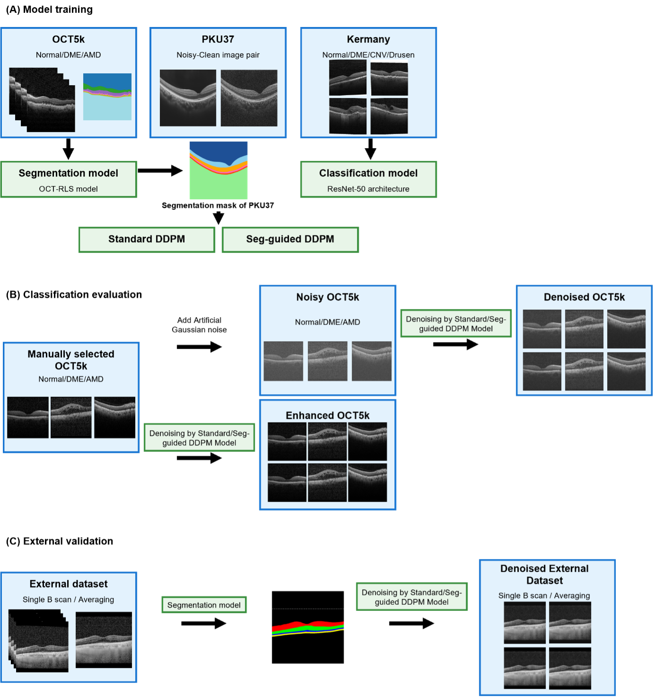
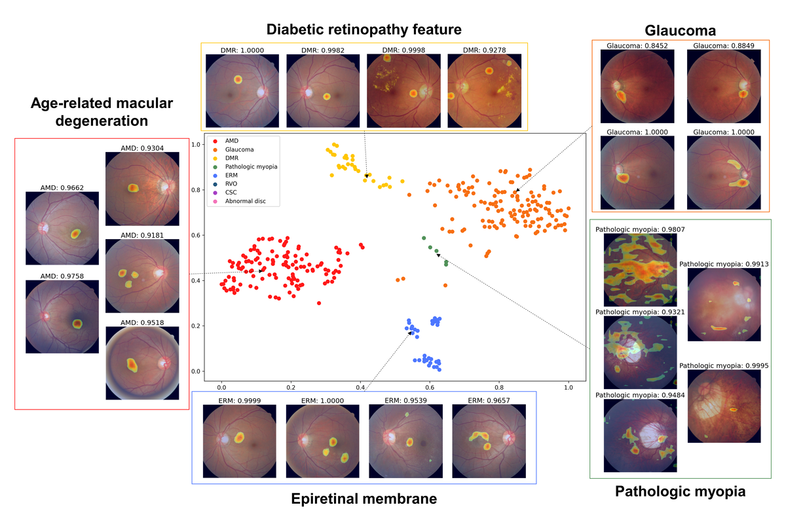
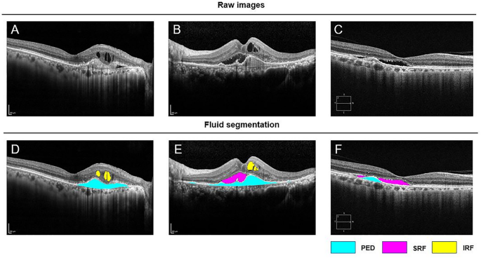
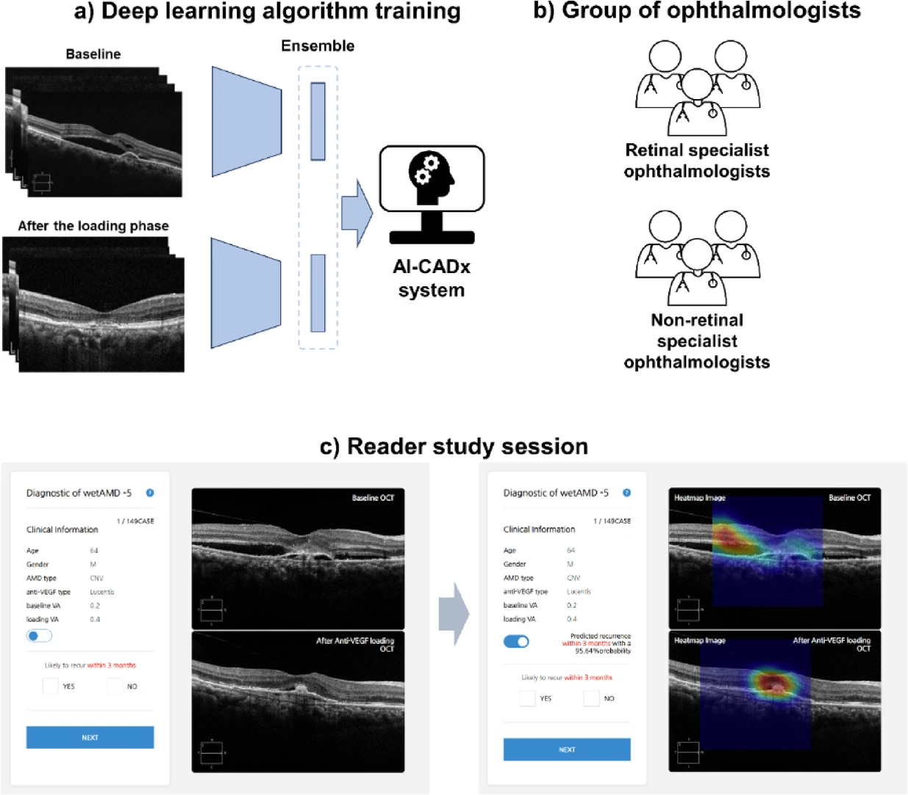
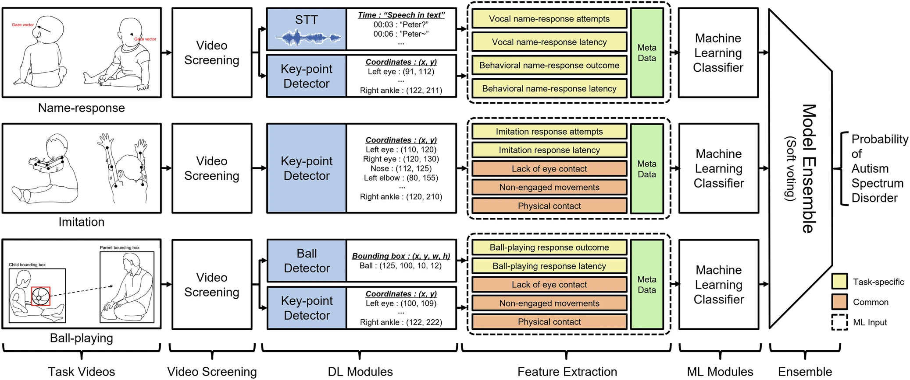
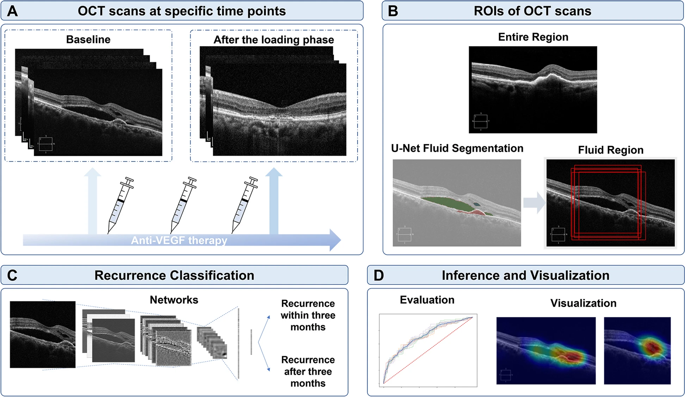

Segmentation-Guided Denoising Diffusion Probabilistic Models for Retinal OCT Speckle Noise Reduction with Enhanced Clinical Diagnostic Accuracy
Scientific Reports (Accepted, in press) 2026

Ph.D. Candidate in Bioengineering, Seoul National University
Clinically Grounded AI for Medical & Retinal Imaging
I develop clinically grounded AI methods for medical imaging, with a focus on retinal and ophthalmic imaging. My research spans representation learning, multimodal prediction, image restoration, and clinician-validated decision support, aiming to build reliable AI systems for real-world healthcare.
Seoul National University Hospital (SNUH)
Machine Learning Researcher · Nov 2021 – Feb 2023
Korea Institute of Science and Technology (KIST)
ML Research Intern, Brain Science Institute · Aug 2020 – May 2021
Peking University
Undergraduate Research Assistant · Mar 2019 – Jun 2020
Seoul National University, Seoul, Korea
Ph.D. Candidate in Bioengineering · Mar 2023 – Present
Peking University, Beijing, China
B.S. in Psychological & Cognitive Sciences · Sep 2016 – Jul 2020

Scientific Reports (Accepted, in press) 2026

Scientific Reports 2026
J Korean Neurosurg Soc 69(3):329–337, 2026



npj Digital Medicine 8:607, 2025


† These authors contributed equally.